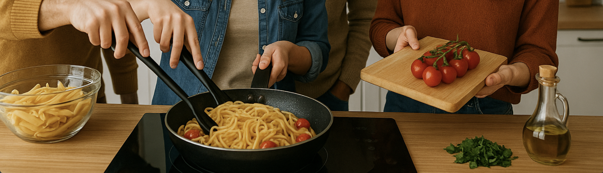

En BID af verdenen

“En BID af verdenen” er en madblog skabt af studerende for studerende, hvor vi deler hurtige, inspirerende opskrifter og historier fra køkkener over hele verden. Selvom vi elsker alt fra eksotiske krydderier til lokale delikatesser, må vi erkende, at pasta altid har en særlig plads i vores hjerter. Her kombinerer vi nemme pastaretter med smagsindtryk fra forskellige kulturer, så alle kan få en bid af verden – og samtidig opleve, hvor sjovt det er at lave mad som studerende.
Forskellige opskrifter på pasta
Her kommer alle de opskirfter på pasta, som vi godt kan lide, der noget for en hver smag, men en ting der ikke kommer til at mangle i disse pastaretter, er kærlighed, omsorg og kød
Carbonara
Se opskrift på Spaghetti Carbonara
Se opskrift på Klassisk Spaghetti Bolognese
Se opskrift på Siciliansk Tomatsovs med Mascarpone